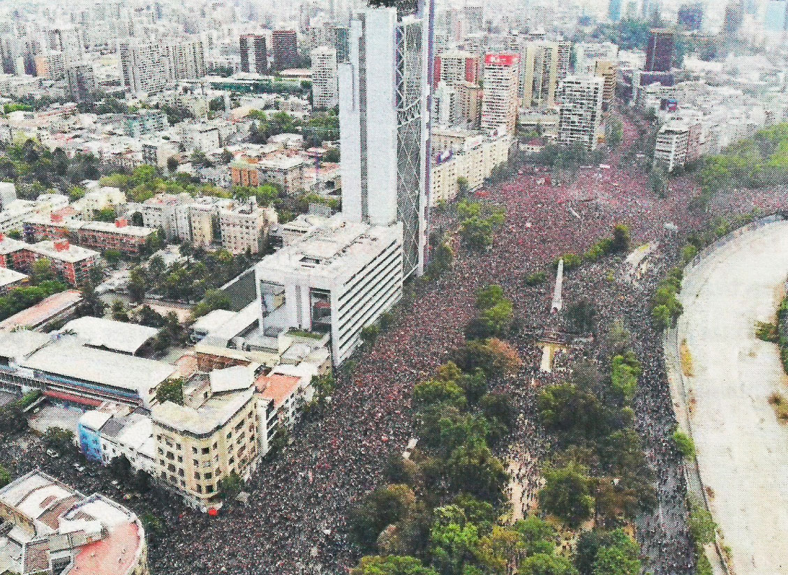
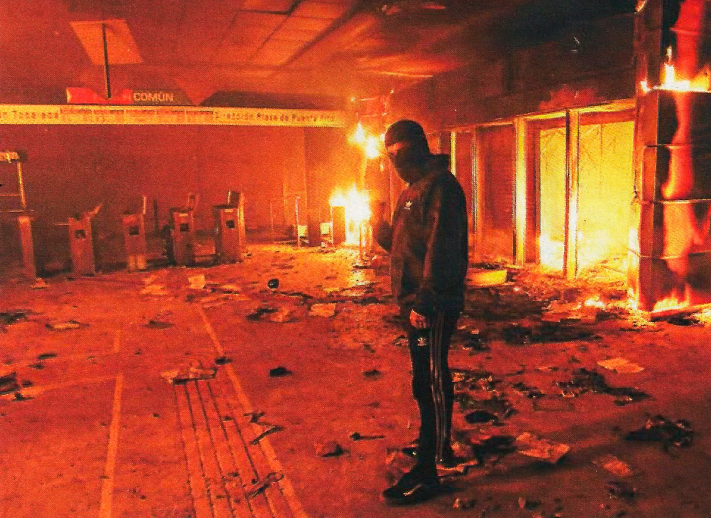
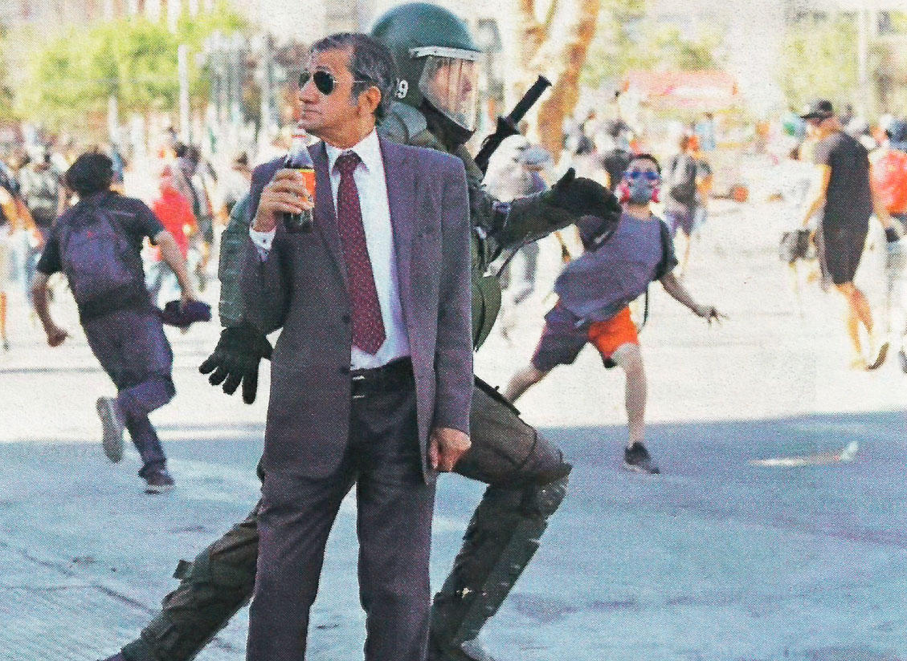
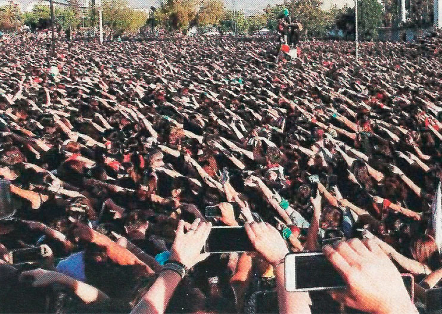
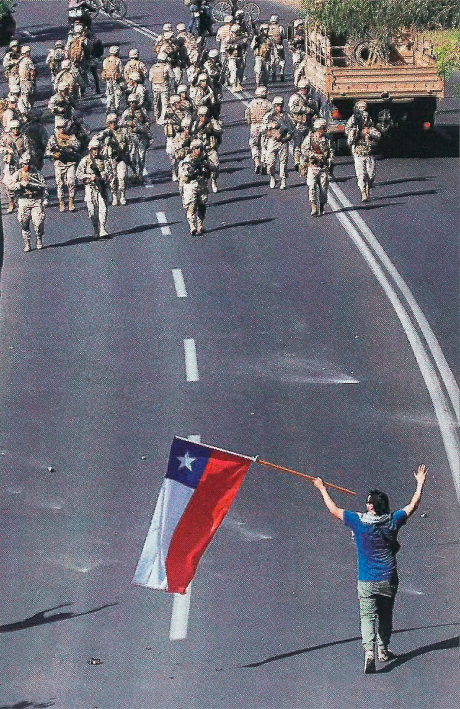
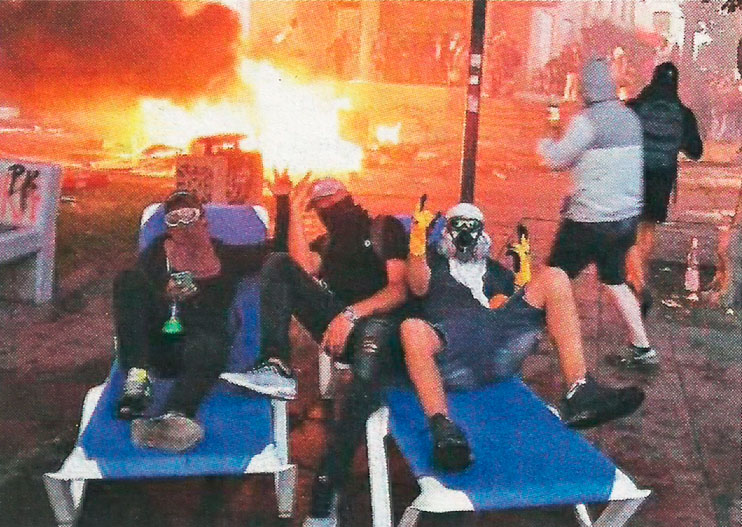
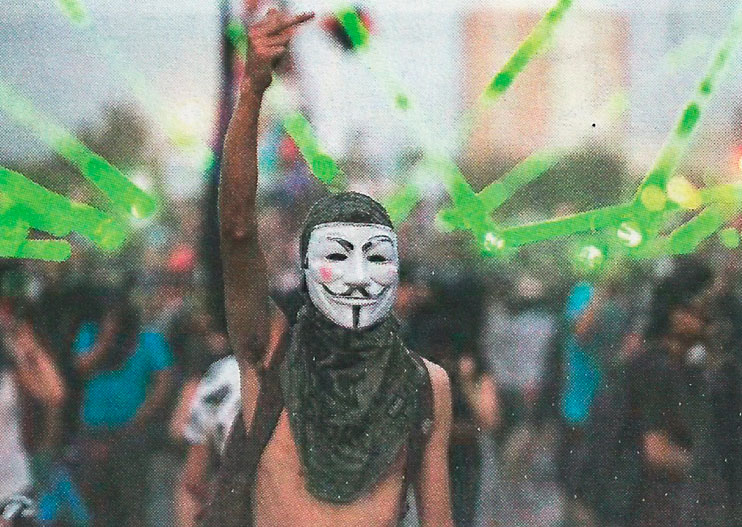

Siete semanas en imágenes

► La multitudinaria marcha del viernes 25 de octubre vista desde
el aire.

► La Estación Macul, de la Línea 4, en la noche del viernes 18 de
octubre.

► Imagen captada por el corresponsal de la agencia Reuters durante
una protesta.
► El cambio de gabinete significó la salida de Chadwick.

► El colectivo Lastesis inició una nueva forma de protesta.

► Soldados desplegados durante el estado de emergencia.

► Encapuchados tras el saqueo de un hotel en La Serena.

► Punteros láser también fueron usados en las protestas.